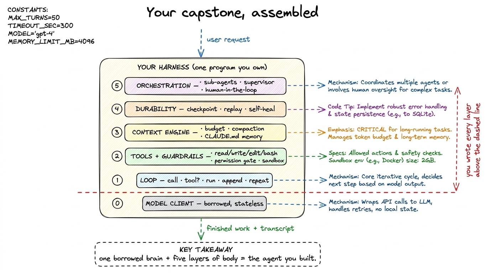
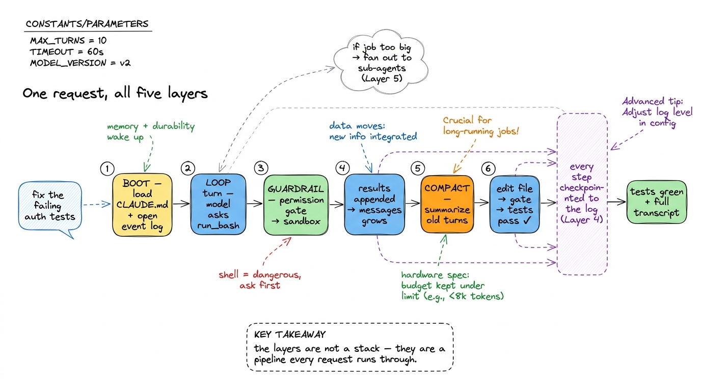
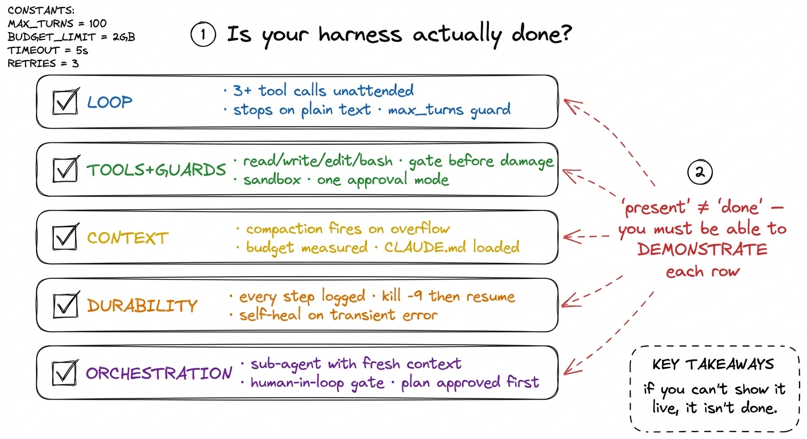
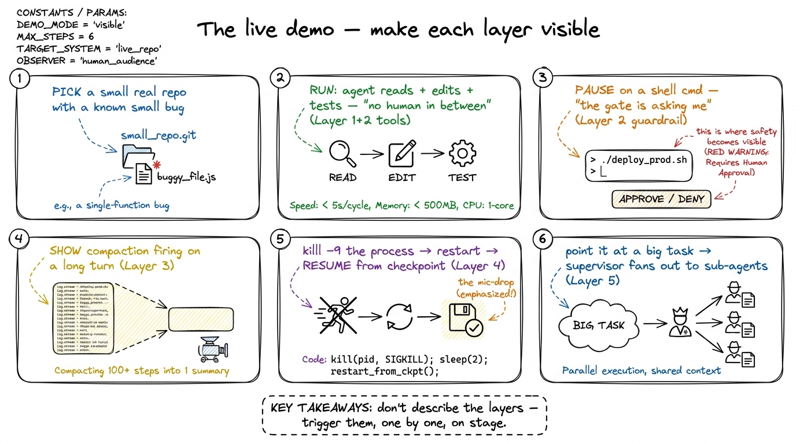

The capstone: your own harness SHIP
Five days ago the model was a stranger you called once and forgot. By now you have wrapped it in a loop that acts, hands that touch the world, a memory that survives long sessions, a spine that recovers from crashes, and a supervisor that splits work too big for one context. Each of those was a chapter; each was a layer. This chapter is where they stop being separate lessons and become one program you own — a small, honest, pi-style coding agent that you can point at a real repository and watch do real work.
This is the victory lap. We are not learning a new idea here — we are assembling the five you already have, checking that each is actually done and not merely sketched, and then standing it up in front of an audience without it falling over. Let me walk the whole machine end to end, give you a per-layer definition of "done," hand you a list of ways to make it more yours, and then show you how to demo it live.
The whole machine, in one picture
Everything you built stacks. The model sits at the bottom, borrowed and stateless. The loop turns single calls into agency. Tools and guardrails give it hands and keep those hands safe. The context engine decides what the model sees each turn. Durability lets a dead process resume instead of restart. Orchestration lets one agent become many under supervision. Read from bottom to top, that is a coding agent; read from top to bottom, that is your capstone's architecture diagram.

figure rendering · The finished harness: a borrowed model wrapped in the five layers youConcretely, the file tree of a capstone that fits in your head looks roughly like this — not because these exact names matter, but because the shape is the shape of the book:
your-agent/
main.py # entrypoint: parse args, load session, run the loop
loop.py # Layer 1 — the agent loop + stop conditions
model.py # the model client (provider behind one interface)
tools/
files.py # read / write / edit
shell.py # run_bash — behind the permission gate
registry.py # {name: schema + fn}
guardrails.py # Layer 2 — permission modes + sandbox policy
context.py # Layer 3 — token budget, compaction, memory load
store.py # Layer 4 — append-only event log, checkpoint, replay
orchestrator.py # Layer 5 — sub-agent dispatch + supervisor
CLAUDE.md # the project memory the agent reads on bootThat is maybe eight hundred lines of real code. Claude Code and pi are bigger, but not categorically bigger — they are these same files with more polish, more tools, and more edge cases handled. The skeleton is identical, and now it is yours.1 pi (pi.dev) is the clearest existence proof that a capable harness can stay small: its whole point is that the loop, the tools, and the model wiring fit in a codebase one person can read in an afternoon. Your capstone is a scaled-down cousin of exactly that philosophy.
How one request flows through all five layers
Let me trace a single request through the assembled machine so the layers stop feeling like a stack of chapters and start feeling like a pipeline. You type "the auth tests are failing — find out why and fix it."
Boot (Layer 3 + 4). main.py starts by loading CLAUDE.md into the system prompt so the agent already knows your project's conventions, and by opening (or resuming) the session's event log so nothing gets lost. The loop begins (Layer 1). The model, seeing the request and the memory, asks to run_bash the test suite. The guardrail fires (Layer 2): a shell command is dangerous, so it passes through the permission gate — in one of the approval modes you built — and runs inside the sandbox. The failing output comes back, gets appended to messages, and the loop turns again. Context is managed (Layer 3): three tool results later the conversation is getting long, so the context engine compacts the earliest turns into a summary before the next call, keeping the budget under control. The model reads a file, proposes an edit, the gate approves it, the tests re-run, they pass. Durability the whole time (Layer 4): every one of those steps was checkpointed to the event log, so if your laptop had died mid-fix you could have replayed to the last good step instead of starting over. And if the job had been huge (Layer 5) — say "migrate all forty endpoints" — the supervisor would have fanned it out to sub-agents, each with its own fresh context, and stitched their results back.

figure rendering · A single request threads through all five layers in order: boot loadsWhat "done" means, per layer
The dangerous thing about a capstone is that every layer can be present but hollow — a loop with no stop guard, a permission gate that always says yes, a compaction step that never fires. So here is a concrete checklist. Treat each item as a claim you must be able to demonstrate, not just point to in the source.
Layer 1 — the loop. Done means the agent runs multi-turn on its own, and the loop ends for the right reason. Verify: it completes a task that needs at least three tool calls with no human between them; it stops the instant the model returns plain text (see stop conditions); and it has a max_turns guard so a confused model can't spin forever.2 The infinite-loop failure mode is real and embarrassing on a live demo — an agent that politely re-reads the same file two hundred times. A hard turn cap plus an interrupt key is the cheapest insurance you will ever buy.
Layer 2 — tools and guardrails. Done means the agent has the core file and shell tools, and it cannot do damage without consent. Verify: read, write, edit, and run_bash all work; a destructive command triggers the permission gate before running, not after; there is a real sandbox or blast-radius limit; and at least one approval mode (auto-accept, or plan-first) is wired end to end.
Layer 3 — the context engine. Done means long sessions survive and the agent starts each run already knowing your project. Verify: a session long enough to overflow the window triggers compaction and keeps going coherently; the token budget is measured, not guessed; and CLAUDE.md is loaded on boot so the agent respects your conventions without being told (see memory and CLAUDE.md).
Layer 4 — durability. Done means a killed process loses nothing. Verify: every step is appended to a durable log; you can kill -9 the process mid-task and resume the session from the last checkpoint instead of from scratch; and a transient API error self-heals with a retry instead of crashing the run.
Layer 5 — orchestration. Done means the agent can exceed one context. Verify: a supervisor can dispatch a sub-agent with its own fresh context and fold the result back; there is a human-in-the-loop gate on the actions that shouldn't be automatic; and a plan-mode / supervision path lets a human approve the plan before execution.

figure rendering · The done-checklist: each layer has a concrete, demonstrable test. A laWays to make it yours
A capstone that passes the checklist is complete. But the whole reason you built it from scratch instead of installing one is that now you can bend it. Here are extensions, roughly easy to hard, that turn "the book's agent" into "your agent."
Add a real tool your work needs. The core four are generic; the interesting ones are yours. A grep/search tool so the agent finds code without reading whole files. A web_fetch so it can read docs. A tool that hits your company's API — the moment the agent can do something specific to your world, it stops being a demo.3 This is exactly how real harnesses grow: Claude Code ships file and shell tools, then a whole MCP ecosystem lets you bolt on tools for your own systems. Your registry pattern from Layer 2 is already the same extension point — adding a tool is adding one entry.
Make it stream. Right now the agent probably prints a wall of text when a turn finishes. Wire up streaming so tokens and tool calls appear live; it is the single biggest jump in how finished the thing feels, and it is mostly plumbing you already understand.
Try code-mode. For some tasks, letting the model write a short script that calls your tools is more powerful than one-tool-at-a-time. Reading code mode vs tool mode and adding a code-execution path is a genuine capability upgrade.
Harden the system prompt. Treat your system prompt as infrastructure, not a sentence you dashed off — version it, test it, and watch behavior change as you tighten it. Small edits here move the whole agent.
Give it a face. A minimal TUI or web front-end over the same loop makes it demoable to non-engineers and forces you to expose the durability and permission machinery as actual UI, which is clarifying.
Swap the model. Because the model client is behind one interface, point it at a different provider or a smaller local model and watch which layers care. Most of the harness won't — that is the payoff of the seam you built on Day 1.
How to demo it live
A live demo is where a hollow layer gets exposed, so treat the demo as the final exam and stage it deliberately. The goal is a run where the audience sees each layer earn its place.
Pick a task that is real, self-contained, and needs the whole machine — a small bug in a small repo, where the fix requires reading, editing, and testing. Scripted-but-honest is fine: rehearse on a repo you know, so the model's path is predictable, but let it actually run. The best demo narrates the layers as they fire: "watch — it's asking to run the tests, so the permission gate is stopping it and asking me" (Layer 2 made visible); "the conversation's getting long, so it just compacted the early turns" (Layer 3); and the mic-drop — kill the process mid-fix, restart, and resume from the checkpoint (Layer 4 made undeniable). Finish by pointing the same agent at something bigger and letting the supervisor fan out (Layer 5).

figure rendering · A demo runbook: choose a real task and stage the run so each of the fiTwo rules keep a live demo from betraying you. First, have an escape hatch: a recorded run of the same task, ready to play if the network or the model has a bad night — you are demoing your harness, not the provider's uptime. Second, show the transcript. Because Layer 4 logged every step, you can scroll back through exactly what the agent did and why; that event log is the proof that this is engineering and not a magic trick.
What you actually built
Step back. Five days ago you could call a model. Now you have a program that reads a codebase, plans, acts on a real machine behind real guardrails, stays coherent across a session longer than any single context window, survives being killed, and splits work across supervised sub-agents. That is not a smaller version of Claude Code or pi — structurally, it is one. The gap between your capstone and the tools you use daily is polish and breadth, not architecture, and you now understand every load-bearing piece of both.
That was the entire promise back in what is a harness: that a coding agent is not magic and not a model, but a machine made of five understandable layers — and that once you had built each one yourself, you would never again see an agent as a black box. Look at the file tree above. You wrote every layer over the dashed line. The brain was borrowed; the harness is yours.